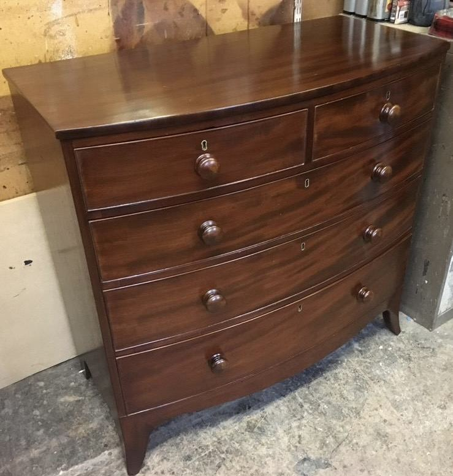
Furniture Restoration & French Polishing
Structural repairs, veneer and inlay, and hand-built French polish finishes — restoring pieces without erasing their history.
AntiquesVeneer & inlayStructural repairs
Enquire →
Est. 1974 · London & Surrey
A father-and-son workshop, trusted with fine furniture across London and Surrey for fifty years.
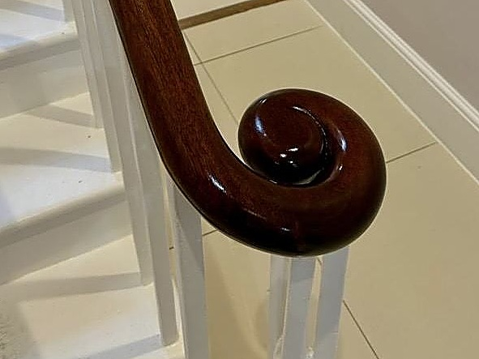
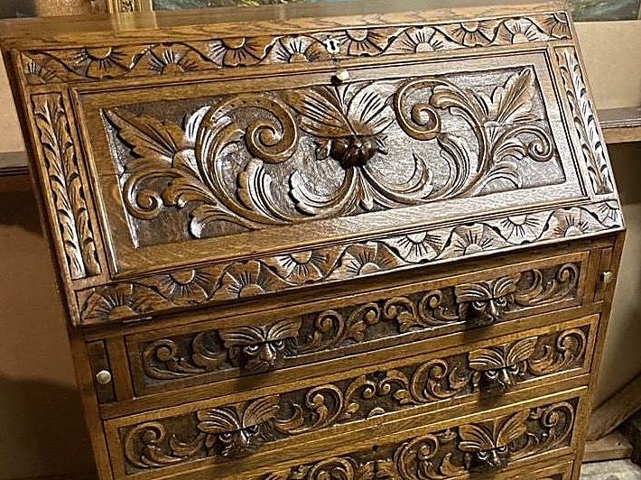
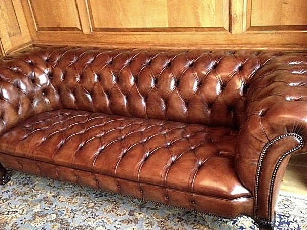
The firm
C M Booker has been restoring fine furniture since 1974, and is still run by the same family. We work on pieces that matter — antiques handed down through generations, and furniture chosen to last a lifetime.
Most work is carried out at our Surrey workshop or on site in your home, across London and Surrey. We work directly with homeowners, as well as with interior designers and architects on client projects.
What we do
Each piece is looked after from first inspection to final finish, by the same small team throughout.

Structural repairs, veneer and inlay, and hand-built French polish finishes — restoring pieces without erasing their history.
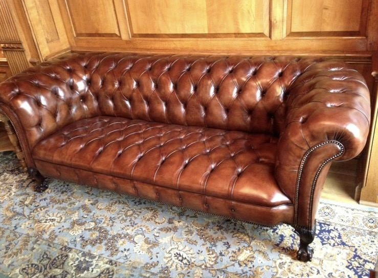
Traditional stuffed and sprung upholstery, deep buttoning and leather renovation, carried out by hand from start to finish.
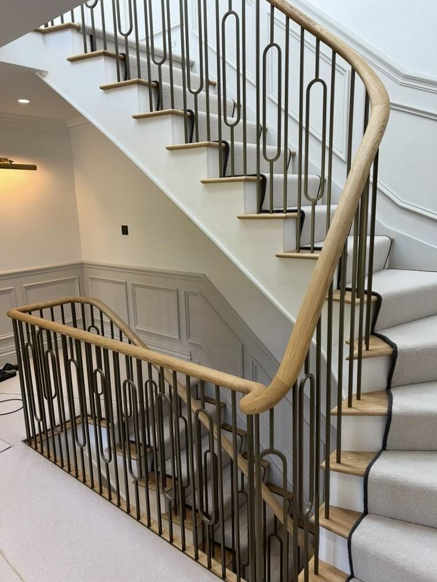
Fitted panelling and staircases, designed and installed on site by the same team — plus floor restoration where a room needs it.
"We don't rush a French polish. Some finishes take three days to get right — so we take three days."
— The workshop, C M Booker
Selected projects
A small selection of pieces and rooms we've worked on recently — flick through, or let it play.
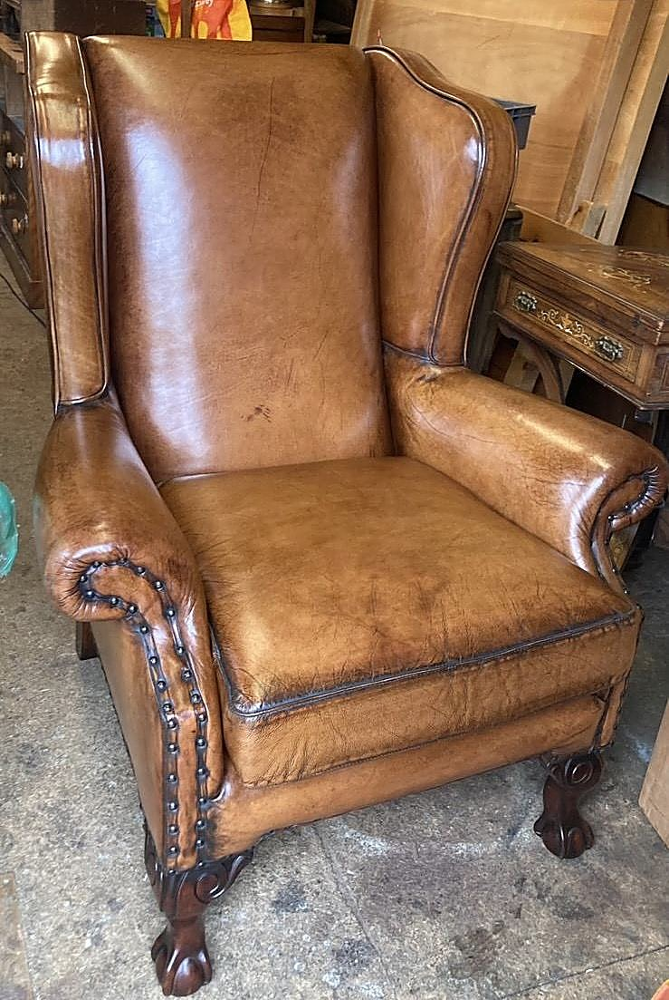
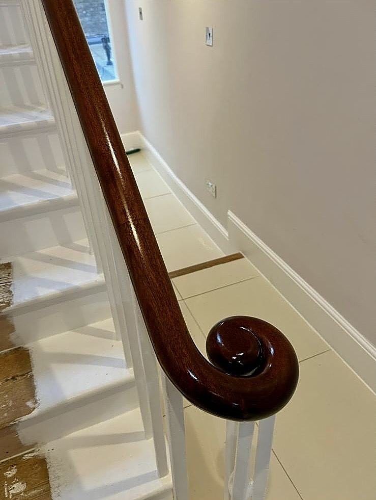
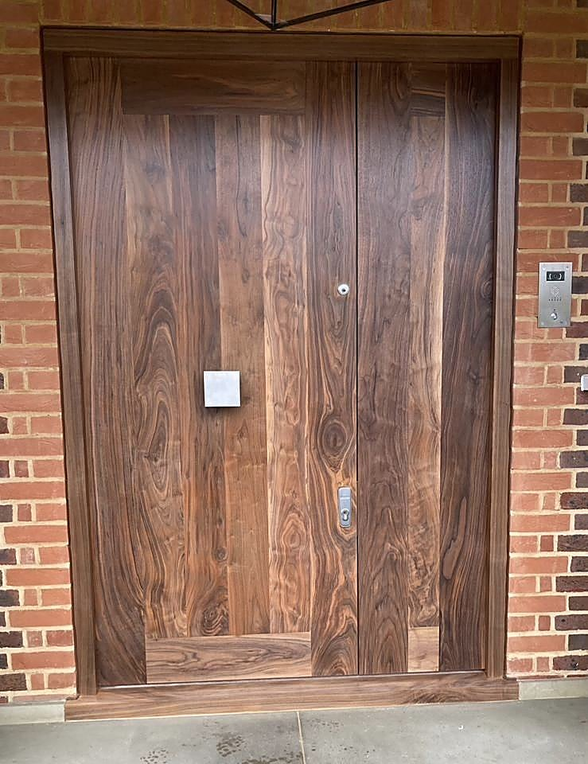
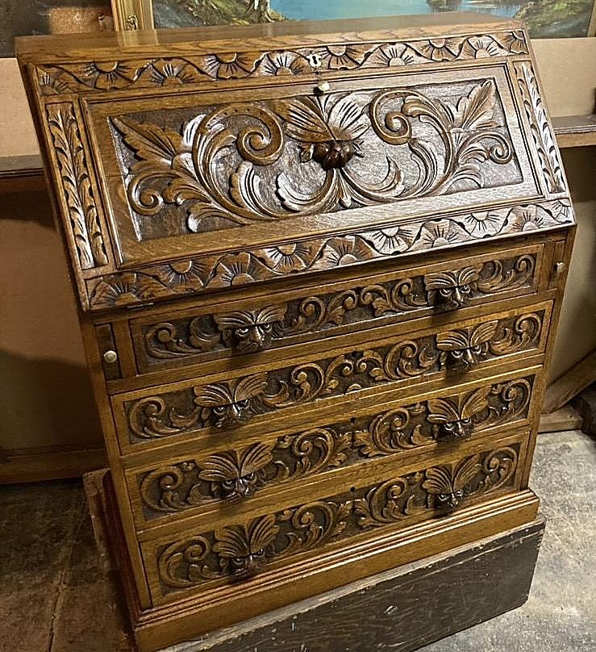
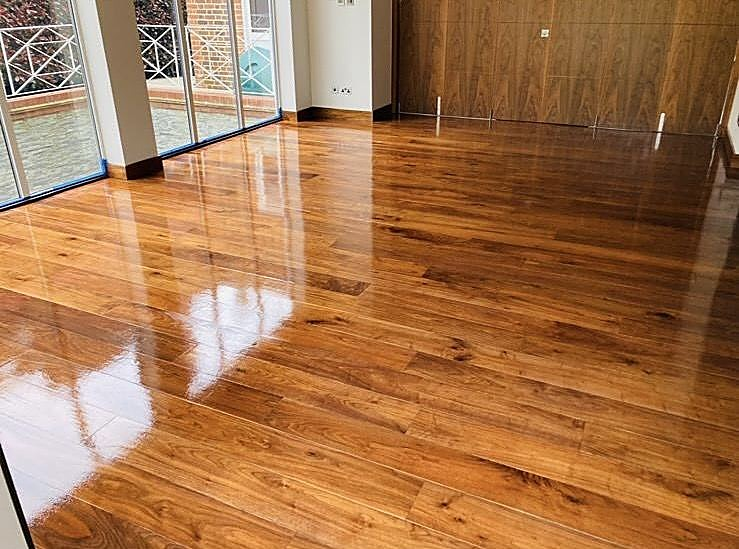
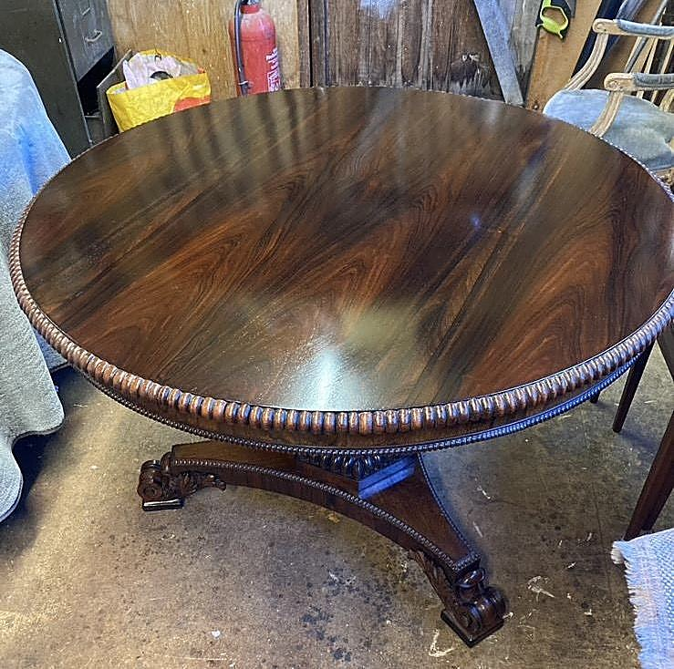
How we work
A few pictures and a line about the piece is usually enough for an initial estimate.
We talk it through, or visit in person for anything substantial, before agreeing the work.
A clear, written quotation, with no obligation to proceed.
Get in touch
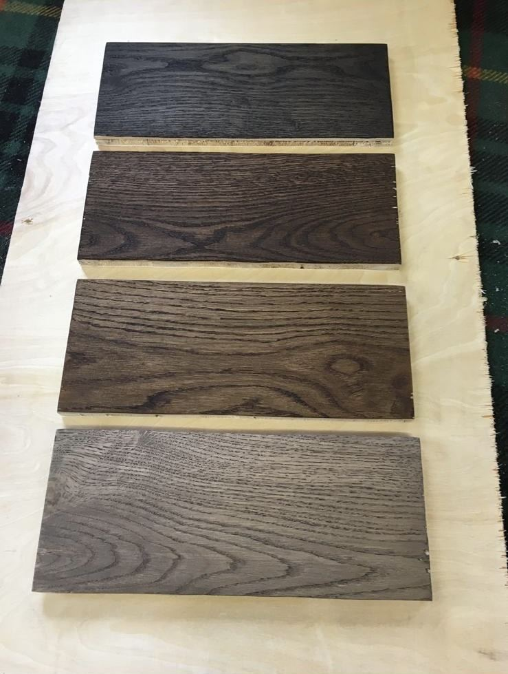
Send a few photographs and a line about what's needed — we'll come back to you the same working day.